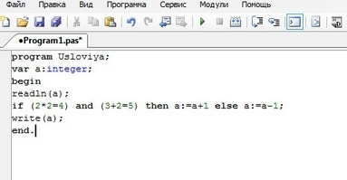
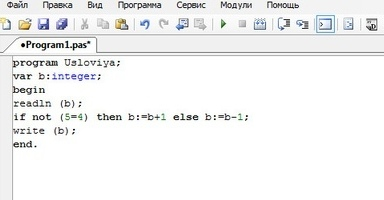
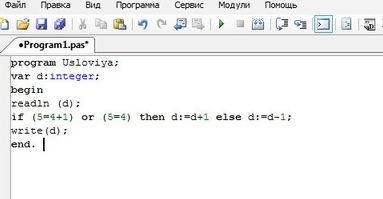
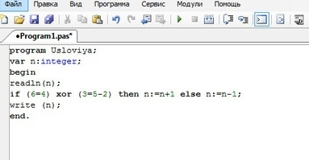
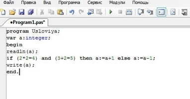
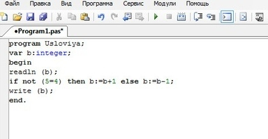
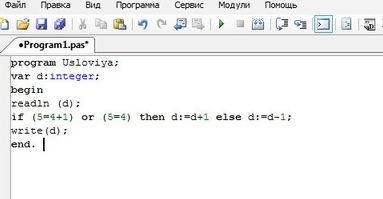
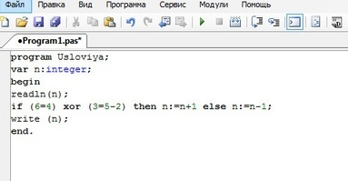

Часть 5. условия

●Условия в Pascal играют очень большую роль, особенно если алгоритм выполнения программы разветвленный. Формулируется условие следующим образом:
if (условие 1) then (действие 1 — основное) else (действие 2 — альтернативное)
(if – если, then – то, else – иначе)
При построении условия пользуются логическими операциями and, not, or, xor:
• and – операнд, объединяющий несколько условий в одно. Действие будет выполняться, только если все перечисленные условия будут верны.
●На этом примере мы видим, что все условия, перечисленные через and верны, потому выполнялось только первое действие, идущее через than. Если хотя бы одно условие не было верно, тогда выполнилось бы второе действие.
• not – логическое действие с условием из одной части. Если условие неверно, то будет выполняться основное действие (первое), если верно – то альтернативное (второе).
●Условие 5=4 неверно, следовательно, будет выполняться первое действие.
• or (или) – логический оператор для условия из нескольких частей. Основное действие будет выполняться, если верно хотя бы одно условие.
●Одно из условий верно, поэтому программа перейдет к основному действию. Тоже повторится, если верными будут все условия. Если же ни одно условие не будет верно, то выполниться альтернативное действие.
• xor – с этим оператором основное действие выполняется, если верно только одно условие. Если верны несколько условий, или же ни одного, то выполнится альтернативное действие.
(Примечание: Не стоит забывать что приоритет логических операций выше чем математических, поэтому, если одни совмещаются с другими, то желательно выделять математические операции скобками, чтобы не возникало ошибок при выполнении программы.)
 







{kind=link}
{kind=link}